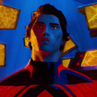
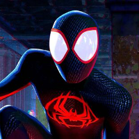
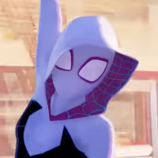
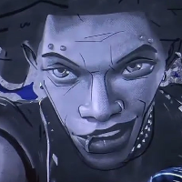
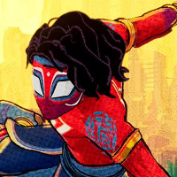
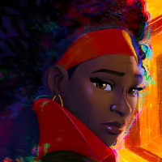

Character |
Personality |
Powers |
Universe |
Height |
Role |
|---|---|---|---|---|---|
Miguel |
Sarcastic, uncaring, impulsive, perfectionist, and smart. | Possesses talons, fangs with venom, healing, strength, and speed | 2099 | 6'9 | Leader of the Spider-Society tasked with keeping the multiverse in tact |
Miles |
Passionate, laid back, smart, and quick-willed | Strength, speed, agility, healing, wallcrawling, bio-electrokinesis, spider-sense | 1610 | 5'8' | The main protaganist, who moves to fit in with the other superhumans and save the multiverse |
Gwen |
Intelligent, awkward, caring, protective. White. | Strength, speed, agility, healing, wallcrawling, gliding, spider-sense | 65 | 5'5' | protaganist, taken in by Jess when rejected in her universe. Works to save Miles from Miguel's agenda |
Hobie Brown |
self-identified punk, anarchist, outgoing, social, confident | Strength, speed, agility, healing, wallcrawling, spider-sense | 138 | 6'5 | Side character who looks out for Gwen and his other friends. Works against Miguels' agenda |
|
 |
outgoing, optimistic, upbeat, carefree, smart | Strength, speed, agility, wallcrawling, spider-sense | 50101 | 5'5 | Assists Miles and Gwen in capturing Spot in his home dimension |
Peter B. Parker
|
tired, caring, an emphath, reckless, impulsive | Strength, speed, agility, healing, wallcrawling, spider-sense, immunity, enhanced senses | 616 | 5'10 | Mentor to Miles, who joined with Miguel and served to try and talk issues out with Miles |
Jessica Drew |
confident, strict, sympatheic | Strength, speed, agility, healing, wallcrawling, spider-sense | 332 | 5'10 | Mentor to Gwen, joined Miguel and served to try and keep Gwen safe |